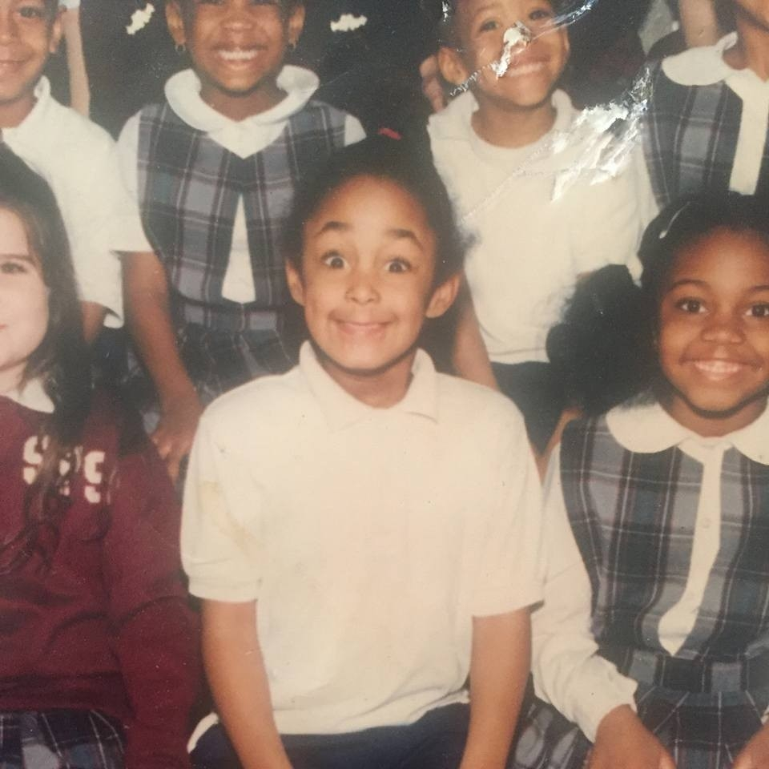

WHO IS SHE?

I am a Memphis native, though I've lived in east, west, and middle Tennessee throughout childhood. Art, design, and poetry are my natural gifts. As a kid I thoroughly enjoyed sprucing up my MySpace page with what I now know to be "codes". My millenial-aged programming is what influenced my love of technology, in which combined with my love of art/design, and opened doors, led me to Code School. I am currently on course to become a certified fullstack web developer, with knowledge in CSS, HTML, Python, and Javascript. I aim to combine gained tech knowledge with my natural artistic abilities to create unique, accessible, and eye catching websites, apps, and various other tech-savvy merchandise.
"I am intricately sewn from different fabrcics, that they may finally exist in One Peace." -Chelsea E. Gregory